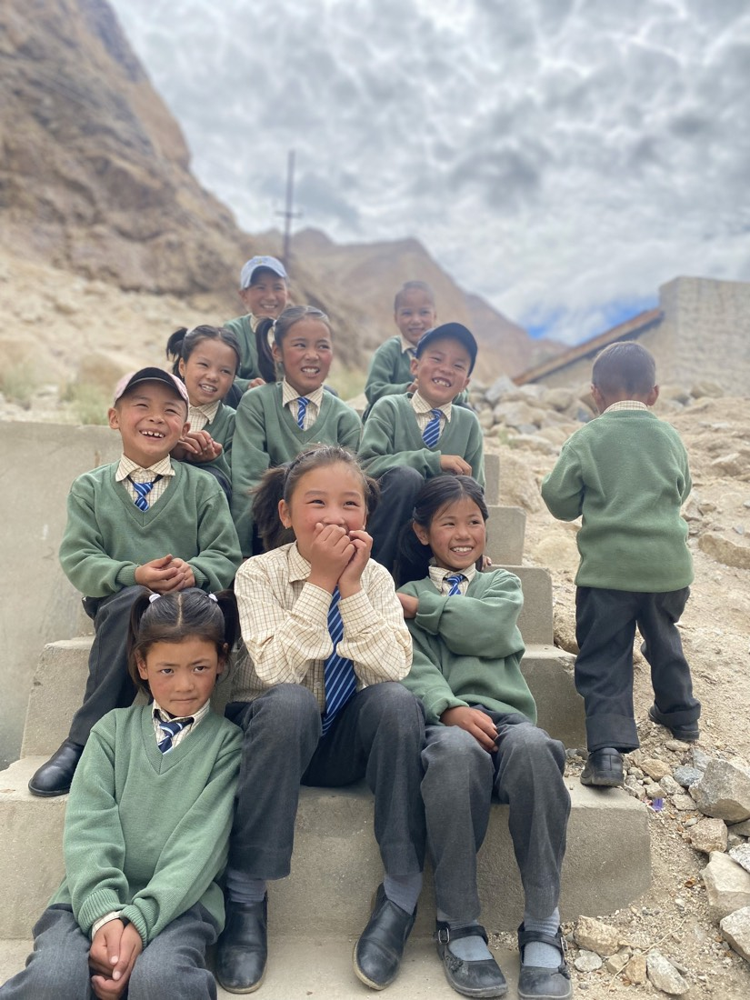
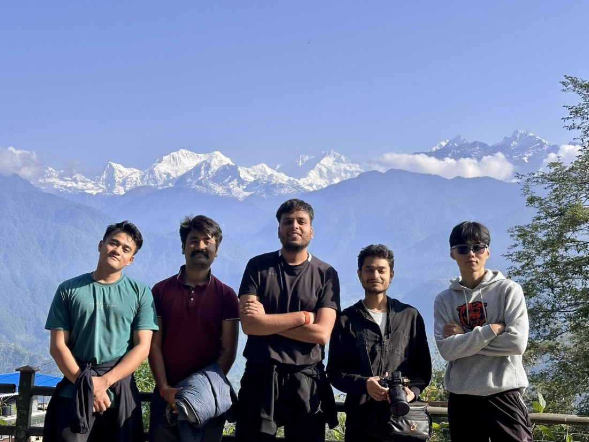
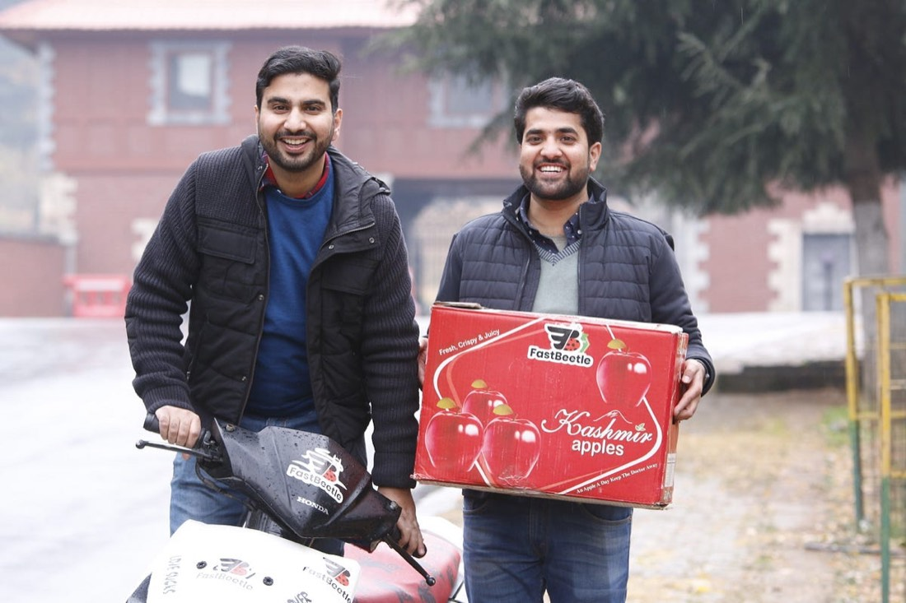
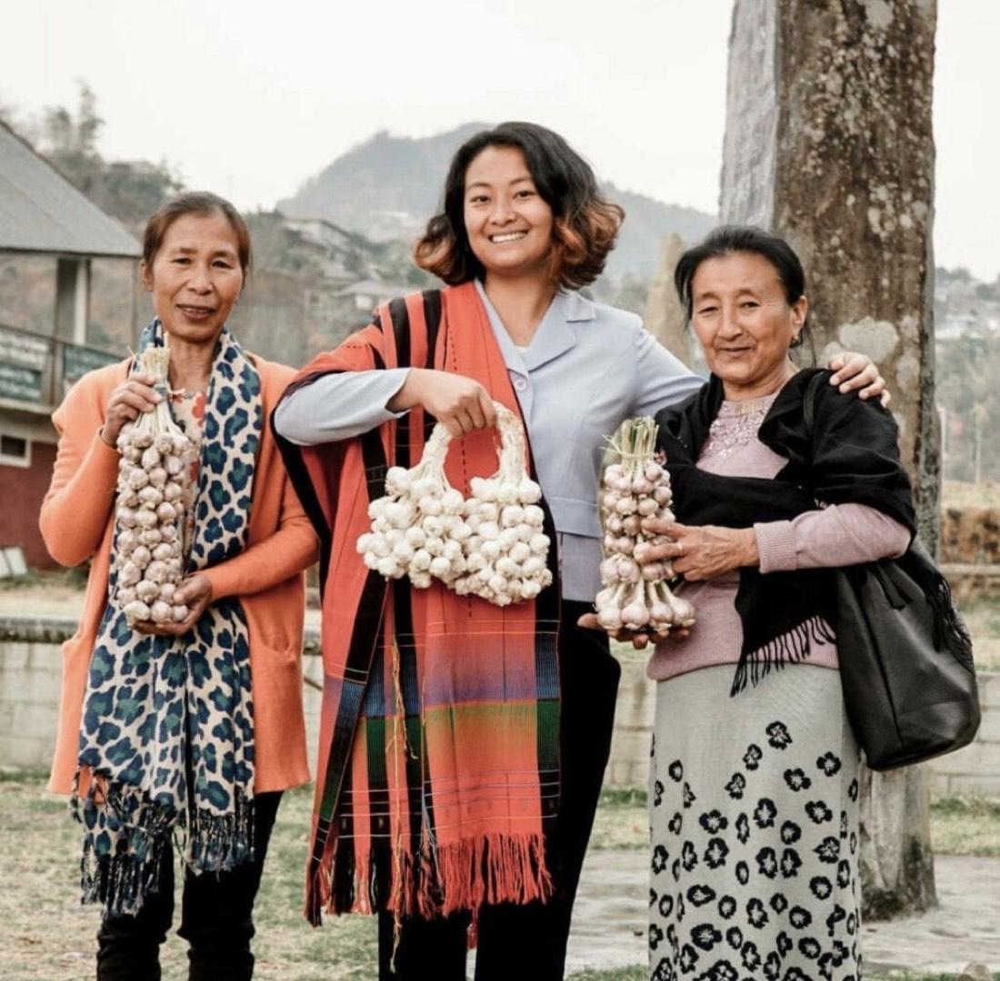
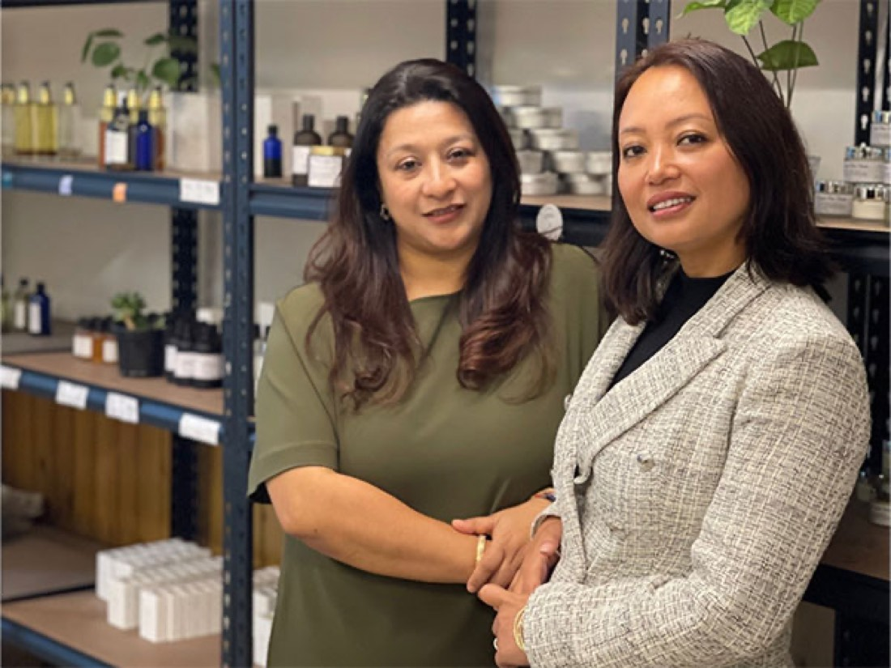

What this layer contains
Layer 1 · Regional overview
The Himalayas are not the periphery.
They are the source.
Part A reads demographics, workforce and migration. Part B reads land, agriculture and forest. Part C reads climate, water and risk. The Indian Himalayan Region spans 12 states & UTs — Alsisar Impact works in 8 of them. The geography filter above scopes every layer of this platform.
Indigenous communities
Leadership that already holds the answers
MoreWhy it matters
The global economy is racing to invent sustainable solutions. Indigenous entrepreneurship has been holding them for generations. Alsisar backs founders from those communities directly, rather than routing capital around them.
Local capacity
Systems, not one-off grants
MoreHow it works
Founders get the capabilities, systems and strategic support to build resilient, investment-ready enterprises — capacity building first, catalytic capital second, advocacy throughout.
Gender equity
Ownership, not just participation
MoreThe measure
Equity is tracked at leadership and worker level against IRIS+ standards — who owns the enterprise, who leads it, and on what terms the workforce is engaged.
Climate resilience
Built into the enterprise model
MoreIn practice
Climate-conscious design is embedded in enterprises operating in fragile and underserved regions — so that a bad season shows up as a managed risk rather than a lost year.
Pillars & portfolio figures — alsisarimpact.org and alsisarimpact.in.


State-by-state demographic cards 8 ▾
State-by-state geographic & risk cards 8 ▾
Layer 2 · Traceability & commodity intelligence
The land checks out. The money doesn't.
Satellite layers confirm the land is intact. Surveys confirm the growers are paid. The registry confirms the product is genuinely Himalayan. And still, most of the value leaves the hills. Select a cluster on the map to open its commodity record.
What this layer contains
Where a rupee ends up
Drawn to scale
Provenance layers
Reading the map
Squares are ventures, at their home town. Circles are sourcing clusters — one per commodity, at its geography. Lines are the sourcing relationships on record. Area under cultivation is not yet collected, so every circle is drawn the same size.
Layer 3 · Portfolio intelligence
What is the venture doing differently?
Part A turns commodity and traceability data into business and livelihood outcomes — farmers engaged, volumes procured, prices paid against benchmark, premiums and income uplift. Part B traces a climate shock back through the same chain, because a bad season lands on that revenue line too.
What this layer contains
Climate shock
Traced through


